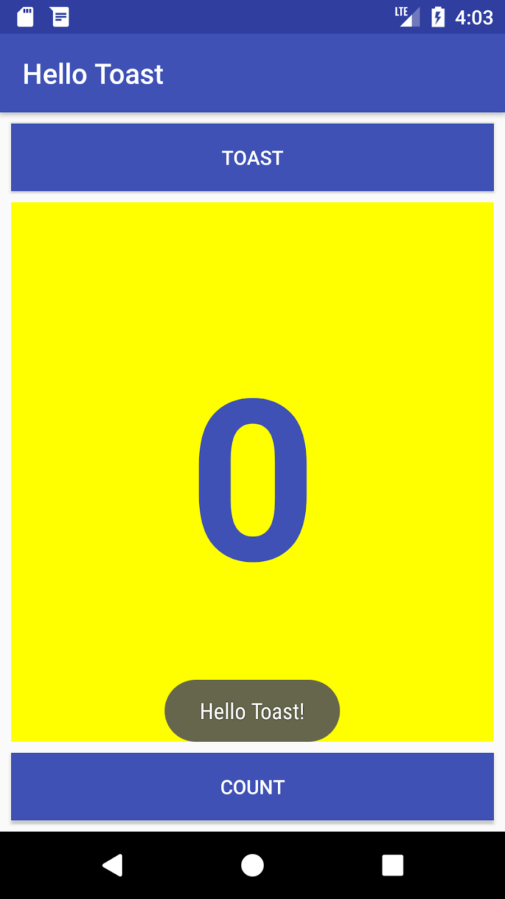
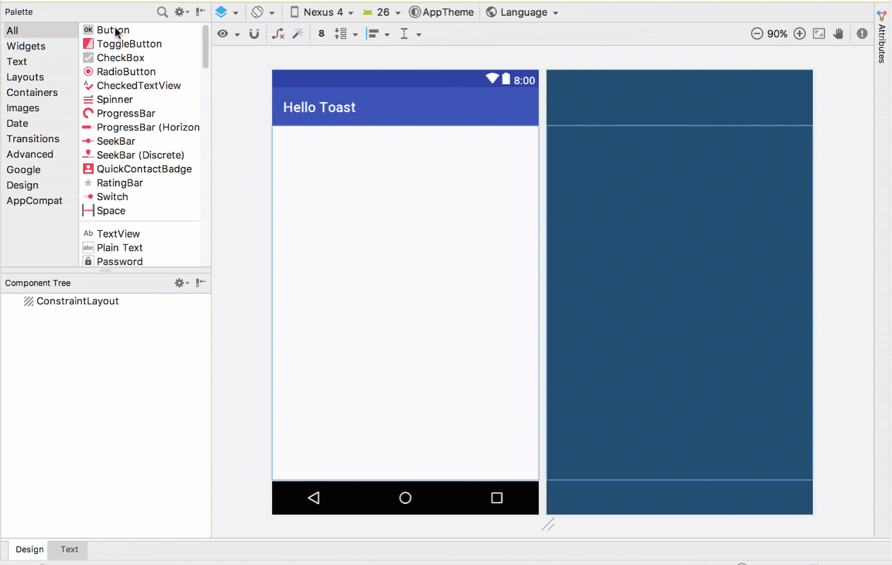
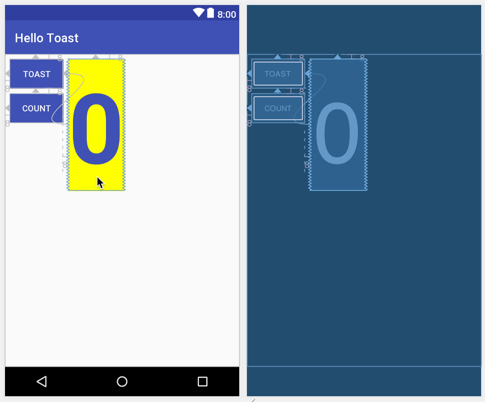

この実践的なコードラボはユニット 1: Android Developer Fundamentals (Version 2) コースの一部です。このコースでは、コードラボを順番に学習することで、このコースを最大限に活用することができます。
- コースのコードラボの完全なリストについては、Codelabs for Android Developer Fundamentals (V2)を参照してください。
- すべてのコンセプトチャプター、アプリ、スライドへのリンクを含むコースの詳細については、Android Developer Fundamentals (Version 2)を参照してください。
注：このコースでは、「codelab」と「実践」という用語を入れ替えて使用しています。
序章
Android端末の画面に表示されるユーザー・インターフェース（UI）は、ビューと呼ばれるオブジェクトの階層構造で構成されており、画面のすべての要素がビューとなります。View クラスは、すべての UI コンポーネントの基本的な構成要素であり、ボタン、チェックボックス、テキスト入力フィールドなどのインタラクティブな UI コンポーネントを提供するクラスの基底クラスです。いくつかのレッスンで説明されている一般的に使用される View のサブクラスには、以下のものがあります。
- テキストを表示するためのTextView
- ユーザがテキストを入力したり編集したりできるようにするためのEditText。
- ボタンやその他のクリック可能な要素
（RadioButton、CheckBox、Spinnerなど）でインタラクティブな動作を提供します。 - スクロール可能なアイテムを表示するための
ScrollViewとRecyclerView。 - 画像を表示するための
ImageView。 ConstraintLayoutとLinearLayoutは、他のView要素を含み、それらを配置するためのものです。
UIを表示したり駆動したりするJavaコードは、Activityを継承するクラスに含まれています。アクティビティは通常、XML（eXtended Markup Language）ファイルとして定義されたUIビューのレイアウトに関連付けられています。この XML ファイルは通常、アクティビティにちなんだ名前が付けられ、画面上のビュー要素のレイアウトを定義します。
例えば、Hello WorldアプリのMainActivityコードは、activity_main.xmlレイアウトファイルで定義されたレイアウトを表示しており、「Hello World」というテキストを持つTextViewが含まれています。
より複雑なアプリでは、アクティビティは、ユーザーのタップに反応したり、グラフィカルなコンテンツを描画したり、データベースやインターネットからデータを要求したりするアクションを実装することがあります。Activityクラスについては別のレッスンで学びます。
この実習では、最初のインタラクティブアプリ、つまりユーザーとのインタラクションを可能にするアプリを作成する方法を学びます。Empty Activity テンプレートを使用してアプリを作成します。また、レイアウト エディタを使用してレイアウトを設計する方法と、XML でレイアウトを編集する方法も学びます。これらのスキルを身につけておくことで、このコースの他の実習を修了することができます。
すでに知っておくべきこと
知っておいて損はない。
- Android Studioをインストールして開く方法。
- HelloWorldアプリの作成方法。
- HelloWorldアプリの実行方法。
学習内容
- インタラクティブな動作を持つアプリを作る方法
- レイアウトエディタを使ってレイアウトを設計する方法。
- XMLでレイアウトを編集する方法。
- 新しい用語がたくさん。親しみやすい定義については、Vocabulary words and concepts glossaryをチェックしてください。
- アプリを作成し、2つの
Button要素とTextViewをレイアウトに追加します。 ConstraintLayoutの各要素を操作して、余白や他の要素に制約をかけます。- UI要素の属性を変更します。
- アプリのレイアウトを XML で編集します。
- ハードコードされた文字列を文字列リソースに抽出します。
- ユーザーが各
Buttonをタップしたときに画面にメッセージを表示するためのクリックハンドラメソッドを実装します。
HelloToastアプリは、2つのButton要素と1つのTextViewで構成されています。ユーザーが最初のButtonをタップすると、画面上に短いメッセージ（Toast）が表示されます。2つ目のButtonをタップすると、TextViewに表示される「クリック」カウンターが増加します。
完成したアプリは以下のようになります。

この実習では、HelloToastアプリのプロジェクトを設計し、実装します。最後にソリューションコードへのリンクを用意しています。
1.1 Android Studioプロジェクトを作成する
1. Android Studioを起動し、以下のパラメータで新規プロジェクトを作成します。
アトリビュート | 値 |
Application Name | Hello Toast |
Company Name | com.example.android (or your own domain) |
Phone and Tablet Minimum SDK | API15: Android 4.0.3 IceCreamSandwich |
Template | Empty Activity |
Generate Layout file box | Selected |
Backwards Compatibility box | Selected |
2. [実行] > [アプリの実行]を選択するか、ツールバーの[実行]アイコン をクリックして、エミュレータまたはデバイス上でアプリをビルドして実行します。
をクリックして、エミュレータまたはデバイス上でアプリをビルドして実行します。
1.2 レイアウトエディタを探索する
Android Studioは、ユーザーインターフェイス（UI）要素のアプリのレイアウトを素早く構築するためのレイアウトエディタを提供します。このエディタでは、ビジュアル デザインやブループリント ビューに要素をドラッグしてレイアウト内に配置したり、制約を追加したり、属性を設定したりすることができます。制約は、レイアウト内での UI 要素の位置を決定します。制約は、他のビュー、親レイアウト、または目に見えないガイドラインとの接続や配置を表します。
レイアウト エディタを探索し、下の図を参照しながら、番号の付いたステップに従ってください。

- Project > Android ペインの app > res > layout フォルダで、activity_main.xml ファイルをダブルクリックして開きます（まだ開いていない場合）。
- まだ選択されていない場合は、デザイン タブをクリックします。デザイン] タブを使用して要素やレイアウトを操作し、[テキスト] タブを使用してレイアウトの XML コードを編集します。
- パレット］ペインには、アプリのレイアウトで使用できる UI 要素が表示されます。
- コンポーネント ツリー ペインには、UI 要素のビュー階層が表示されます。
View要素は、親と子のツリー階層に編成され、子は親の属性を継承します。上の図では、TextViewはConstraintLayoutの子です。これらの要素については、このレッスンの後半で学びます。 - レイアウトエディタのデザインペインとブループリントペインは、レイアウト内のUI要素を示しています。上の図では、レイアウトには1つの要素しか表示されていません: "Hello World "を表示するTextViewです。
- 属性タブには、UI要素のプロパティを設定するための属性ペインが表示されます。
ヒント：レイアウトエディタの使用方法の詳細については「Building a UI with Layout Editor」を、Android Studioの完全なドキュメントについては「Meet Android Studio」を参照してください。
このタスクでは、レイアウト エディタで ConstraintLayout 機能を使用して HelloToast アプリの UI レイアウトを作成します。制約は、後で示すように手動で作成することも、自動接続ツールを使用して自動的に作成することもできます。
2.1 要素の制約を調べる
以下の手順に従ってください。
- まだ開いていない場合は、プロジェクト > Androidペインから
activity_main.xmlを開きます。[デザイン]タブがまだ選択されていない場合は、それをクリックします。
![click the Select Design Surface button [ICON HERE] in the toolbar and choose Design + Blueprint. [IMAGEINFO]: ic_blueprint_icon.png, Blueprint button](img/2e7121c2997b0da8.png)

ブループリントがない場合は、ツールバーの[ブループリント]ボタンをクリックして、[デザイン] + [ブループリント]を選択します。
- オートコネクトツールもツールバーにあります。デフォルトでは有効になっています。このステップでは、ツールが無効になっていないことを確認してください。
- ズームインボタンをクリックして、デザインペインとブループリントペインを拡大し、クローズアップしてみます。
- コンポーネントツリーペインでテキストビューを選択します。Hello World"
TextViewがデザインとブループリントペインでハイライトされ、要素の制約が表示されます。 - このステップについては、下のアニメーション図を参照してください。
TexiViewの右側にある円形のハンドルをクリックして、ビューをレイアウトの右側にバインドしている水平方向の制約を削除します。右側に拘束されなくなったため、TextViewは左側にジャンプします。水平方向の制約を元に戻すには、同じハンドルをクリックしてレイアウトの右側に線をドラッグします。
ブループリントやデザインペインでは、以下のハンドルがTextView要素に表示されます。
- 制約ハンドル：上のアニメーション図のように制約を作成するには、要素の側面に表示されている制約ハンドルの円をクリックします。次に、そのハンドルを別の制約ハンドル、または親の境界にドラッグします。ジグザグ線は制約されたことを表します。
- リサイズハンドル：要素のサイズを変更するには、四角いリサイズハンドルをドラッグします。ハンドルをドラッグしている間は、ハンドルは角のある角に変化します。

2.2 レイアウトにボタンを追加する
この機能を有効にすると、オートコネクト ツールは、UI 要素の親レイアウトに対する 2 つ以上の制約を自動的に作成します。要素をレイアウトにドラッグすると、要素の位置に基づいて制約が作成されます。
Buttonを追加するには、以下の手順に従ってください。
- 何もない状態から始めます。
TextView要素は必要ありませんので、まだ選択されている間に、Deleteキーを押すか、Edit > Deleteを選択します。これで完全に真っ白なレイアウトになりました。 - パレットペインから
Buttonをレイアウトの任意の位置にドラッグします。ボタンをレイアウトの上部中央エリアにドロップすると、制約が自動的に表示される場合があります。そうでない場合は、下のアニメーション図のように、レイアウトの上部、左側、右側に制約をドラッグすることができます。

2.3 レイアウトに2つ目のボタンを追加する
- 下の図に示すように、パレットペインから別のボタンをレイアウトの中央にドラッグしてください。オートコネクトが水平方向の制約を提供してくれるかもしれません。（提供されていない場合は、自分でドラッグすることができます）
- 垂直方向の制約をレイアウトの下部にドラッグします。（下図を参照）

![click the specific handle that sets the constraint. [IMAGEINFO]: ic_remove_constraints_button.png](img/c5b4eebad60244c9.png)
要素を選択し、その上にポインタを置くと、制約のクリアボタンが表示され、要素から制約を削除することができます。このボタンをクリックすると、選択した要素上のすべての制約が削除されます。単一の制約をクリアするには、制約を設定している特定のハンドルをクリックします。
レイアウト全体のすべての制約をクリアするには、ツールバーの「すべての制約をクリア」ツールをクリックします。このツールは、レイアウト内のすべての制約をやり直したい場合に便利です。
属性ペインでは、UI 要素に割り当てることのできるすべての XML 属性にアクセスすることができます。すべてのビューに共通の属性（プロパティとして知られている）は、ビュークラスのドキュメントに記載されています。
このタスクでは、ほとんどのViewタイプに適用される重要な Button 属性の値を新規に入力したり、変更したりします。
3.1 ボタンのサイズを変更する
レイアウトエディタには、Viewの四隅にリサイズハンドルが用意されているので、Viewのサイズを素早く変更することができます。Viewの各コーナーにあるハンドルをドラッグしてサイズを変更することができますが、そうすると幅と高さの寸法がハードコードされます。ハードコードされた寸法は、異なるコンテンツや画面サイズに適応できないため、ほとんどのView要素のサイズをハードコードしないようにしてください。
代わりに、レイアウトエディタの右側にある「属性」ペインを使用して、ハードコードされた寸法を使用しないサイジングモードを選択します。属性ペインには、上部にあるビューインスペクタと呼ばれる正方形のサイジングパネルがあります。正方形の中の記号は、以下のように高さと幅の設定を表しています。

上の図では
- 高さのコントロール：このコントロールは
layout_height属性を指定し、正方形の上側と下側の2つのセグメントに表示されます。角度は、このコントロールがwrap_contentに設定されていることを示しており、これは、Viewがその内容に合わせて必要に応じて垂直方向に展開されることを意味しています。8 は標準的な余白が8dpに設定されていることを示しています。 - 幅のコントロール：このコントロールは
layout_widthを指定し、正方形の左右に2つのセグメントで表示されます。角度は、このコントロールがwrap_contentに設定されていることを示しています。これは、ビューがその内容に合わせて必要に応じて水平方向に展開され、最大 8dp のマージンが設定されていることを意味しています。 - 閉じるボタン：クリックして属性ペインを閉じます。
以下の手順に従ってください。
- コンポーネントツリーペインの一番上の
Buttonを選択します。 - レイアウトエディタウィンドウの右側にある「属性」タブをクリックします。

- 幅コントロールを2回クリックすると、1回目のクリックで「直線で固定」に、2回目のクリックで「スプリングコイルで制約を一致」に変化します。

幅制御を変更した結果、属性ペインの layout_width 属性に match_constraint という値が表示され、Button 要素はレイアウトの左右のスペースを埋めるように横に伸びます。
4. 2 番目のButtonを選択し、下の図のように、前のステップと同じように layout_width を変更します。

前の手順で示したように、インスペクタの高さと幅のコントロールを変更すると、［属性］ペインの［layout_width］と［layout_height］属性が変わります。これらの属性は、レイアウトの3つの値のうちの1つを取ることができ、これはConstraintLayoutです。
match_constraint設定は、設定されている場合は、親の幅または高さをマージンまで埋めるようにView要素を展開します。この場合の親はConstraintLayoutです。ConstraintLayoutについては、次のタスクで詳しく説明します。wrap_content設定は、View要素の寸法を縮小して、コンテンツを囲むのに十分な大きさにします。コンテンツがない場合、View要素は非表示になります。- デバイスの画面サイズに合わせた固定サイズを指定するには、密度に依存しないピクセル数（
dp単位）を指定します。例えば、16dpは16個の密度に依存しないピクセルを意味します。
ヒント：ポップアップメニューを使用してlayout_width属性を変更すると、設定されたディメンションがないため、layout_width属性はゼロに設定されます。この設定は match_constraintと同じで、制約やマージンの設定を満たすために、ビューを可能な限り拡大することができます。
3.2 ボタンの属性を変更する
Activityレイアウト内で各Viewを一意に識別するために、各ViewまたはViewのサブクラス（Buttonなど）は一意のIDを必要とします。また、Button要素にはテキストが必要です。View要素には、色や画像の背景を持つこともできます。
属性ペインでは、View要素に割り当てることができるすべての属性にアクセスすることができます。android:id、background、textColor、text属性などの各属性に値を入力することができます。
次の図は、これらの手順を実行する方法を示しています。
- 最初の
Buttonを選択した後、レイアウト内の要素を識別するために使用されるandroid:id属性のために、Attributes ペインの上部にあるIDフィールドを button_toast に編集します。 background属性を@color/colorPrimaryに設定します。(@cを入力すると、選択しやすいように選択肢が表示されます)textColor属性を@android:color/whiteに設定します。text属性を Toast に編集します。
5. button_countをIDとして使用し、text属性のCountを使用し、背景とテキストの色を前のステップと同じにして、2つ目のButtonに対して同じ属性変更を実行します。
colorPrimaryはテーマの原色で、colors.xmlリソースファイルで定義されている事前定義のテーマベースカラーの1つです。これはアプリバーに使用されます。他のUI要素にベースカラーを使用することで、統一されたUIが作成されます。アプリのテーマとマテリアルデザインについては、別のレッスンで学びます。
ConstraintLayoutの利点の1つは、他の要素との相対的な位置合わせや制約を行うことができることです。このタスクでは、レイアウトの中央にTextViewを追加し、水平方向に余白を、垂直方向に2つのButton要素に制約をかけます。次に、属性ペインでTextViewの属性を変更します。
4.1 テキストビューの追加と制約
- 下のアニメーション図のように、パレットペインから
TextViewをレイアウトの上部にドラッグし、TextViewの上部からToastButtonの下部にあるハンドルに制約をドラッグします。これにより、TextViewがボタンの下になるように配置されます。

- 下のアニメーション図に示すように、
TextViewの下からカウントボタンの上のハンドルまで、そしてTextViewの側面からレイアウトの側面まで制約をドラッグします。これにより、TextViewが2つのButton要素の間のレイアウトの中央に位置するように制約されます。

4.2 テキストビューの属性を設定する
TextViewを選択した状態で、まだ開いていない場合は、属性ペインを開きます。下の図のようにTextViewの属性を設定します。まだ見たことのない属性については、図の後で説明します。
IDを show_count に設定します。textを0に設定します。textSizeを160spに設定します。textStyleを B（太字）に、textAlignment を ALIGNCENTER（段落を中央に配置）に設定します。- 水平と垂直のビューサイズコントロール（
layout_widthとlayout_height）を match_constraint に変更します。 textColorを @color/colorPrimary に設定します。- ペインを下にスクロールして「すべての属性を表示」をクリックし、2ページ目の属性を下にスクロールして
backgroundに移動し、「#FFFF00」を入力します。 gravityまで下にスクロールしてgravityを展開し、center_ver（中心垂直の場合）を選択します。

textSize：テキストビューのテキストサイズ。このレッスンでは、サイズは160spに設定されています。spはスケールに依存しないピクセルの略で、dpと同様に画面の密度とユーザーのフォントサイズの好みに合わせてスケールする単位です。フォントサイズを指定する際には、画面密度とユーザーの好みの両方に合わせてサイズが調整されるように、dpの単位を使用してください。textStyleとtextAlignment：このレッスンではテキストスタイルをB（太字）に、テキストアラインメントをALIGNCENTER（段落を中央に配置する）に設定してください。gravity：gravity属性は、VIewが親ViewまたはViewGroup内でどのように整列されるかを指定します。このステップでは、親ConstraintLayout内でTextViewを垂直方向に中央揃えに設定してください。
![but on the second page of the Attributes pane for a TextView. The Attributes pane changes for each type of View: The most popular attributes for the View type appear on the first page, and the rest are listed on the second page. To return to the first page of the Attributes pane, click the [ICON HERE] icon in the toolbar at the top of the pane. [IMAGEINFO]: attributes_pane_switch_pages.png, Switch Attribute pane pages](img/d7227997a62342bd.png)
background属性は、Buttonの場合は属性ペインの1ページ目にありますが、TextViewの場合は属性ペインの2ページ目にあることに気づくかもしれません。属性ペインはViewのタイプごとに変化します。Viewタイプで最も一般的な属性が最初のページに表示され、残りの属性は2ページ目に表示されます。
属性ペインの最初のページに戻るには、ペイン上部のツールバーのアイコンをクリックします。
Hello Toastアプリのレイアウトがほぼ完成しました。しかし、コンポーネントツリーの各UI要素の横に[！]マークが表示されています。これらの[！]マークの上にポインタを合わせると、以下のような警告メッセージが表示されます。ハードコードされた文字列はリソースに定義して使用する必要があります。

レイアウトの問題を修正する最も簡単な方法は、XMLでレイアウトを編集することです。レイアウトエディタは強力なツールですが、一部の変更はXMLソースコードで直接おこなった方が簡単です。
5.1 レイアウトのXMLコードを開く
このタスクでは、まだ開いていない場合は、activity_main.xmlファイルを開き、レイアウトエディタの下部にある[テキスト]タブをクリックします。
XML エディタが表示され、デザインペインとブループリントペインがエディタに切り替わります。レイアウトのXMLコードの一部を示す下の図を見るとわかるように、警告は強調表示されています。(ハードコードされた "0 "もハイライトされていますが、図には表示されていません。) ハードコードされた文字列 "Toast "にポインタを合わせると、警告メッセージが表示されます。
5.2 文字列リソースの抽出
文字列をハードコーディングするのではなく、文字列を表す文字列リソースを使用するのが最良の方法です。文字列を別のファイルに定義しておくと、特にこれらの文字列を複数回使用する場合に、文字列の管理が容易になります。また、各言語ごとに文字列リソースファイルを作成する必要があるため、アプリの翻訳やローカライズには文字列リソースは必須です。
- "
Toast"（最初に強調表示された警告）という単語を一度クリックします。 - Windowsの場合はAlt-Enter、macOSの場合はOption-Enterを押し、ポップアップメニューから文字列リソースの抽出を選択します。
- リソース名にbutton_label_toastを入力します。
- OKをクリックします。文字列リソースが
values/res/string.xmlファイルに作成され、コード内の文字列がリソースへの参照に置き換えられます。
@string/button_label_toast
- 残りの文字列を抽出："
Count"のbutton_label_countと "0 "のcount_initial_valueを抽出します。 - Project > Androidペインで、res内の値を展開し、
string.xmlをダブルクリックしてstring.xmlファイル内の文字列リソースを確認します。
<resources>
<string name="app_name">Hello Toast</string>
<string name="button_label_toast">Toast</string>
<string name="button_label_count">Count</string>
<string name="count_initial_value">0</string>
</resources> 7. メッセージを表示する後続のタスクで使用するために、別の文字列が必要です。string.xmlファイルに "Hello Toast!"というフレーズ用のtoast_messageという名前の別の文字列リソースを追加します。
<resources>
<string name="app_name">Hello Toast</string>
<string name="button_label_toast">Toast</string>
<string name="button_label_count">Count</string>
<string name="count_initial_value">0</string>
<string name="toast_message">Hello Toast!</string>
</resources>ヒント：文字列リソースには、空のテンプレートを使用してアプリプロジェクトを開始した場合、画面上部のアプリバーに表示されるアプリ名が含まれます。app_nameリソースを編集することで、アプリ名を変更することができます。
このタスクでは、MainActivityの各Buttonに、ユーザーがButtonをタップしたときに実行されるJavaメソッドを追加します。
6.1 各ボタンに onClick 属性とハンドラを追加する
クリック ハンドラは、ユーザーがクリック可能な UI 要素をクリックまたはタップしたときに呼び出されるメソッドです。Android Studio では、デザイン タブの属性ペインの onClick フィールドでメソッド名を指定できます。また、XML エディタで Button に android:onClick プロパティを追加することで、ハンドラメソッドの名前を指定することもできます。ハンドラメソッドをまだ作成していないので、後者の方法を使うことになりますが、XML エディタはそれらのメソッドを自動的に作成する方法を提供します。
1. XMLエディタを開いた状態（テキストタブ）で、android:idがbutton_toastに設定されているButtonを見つけます。
<Button
android:id="@+id/button_toast"
android:layout_width="0dp"
...
app:layout_constraintStart_toStartOf="parent"
app:layout_constraintTop_toTopOf="parent" /> 2. button_toast要素の最後の属性の後に、android:onClick属性を追加して、最後の属性の後に、 /> end indicatorの前に追加します。
android:onClick="showToast" />3. 属性の隣に表示される赤い電球のアイコンをクリックします。クリックハンドラの作成を選択し、MainActivityを選択し、OKをクリックします。
赤い電球のアイコンが表示されない場合は、メソッド名（"showToast"）をクリックします。Alt-Enter（Macの場合はOption-Enter）を押し、MainActivityでCreate 'showToast(view)'を選択し、OKをクリックします。
このアクションは、これらの手順の最後に示すように、MainActivityのshowToast()メソッドのプレースホルダメソッドのスタブを作成します。
4. button_count Buttonで最後の2つのステップを繰り返します。最後にandroid:onClick属性を追加し、クリックハンドラを追加します。
android:onClick="countUp" />ConstraintLayout 内の UI 要素の XML コードは次のようになります。
<Button
android:id="@+id/button_toast"
android:layout_width="0dp"
android:layout_height="wrap_content"
android:layout_marginEnd="8dp"
android:layout_marginStart="8dp"
android:layout_marginTop="8dp"
android:background="@color/colorPrimary"
android:text="@string/button_label_toast"
android:textColor="@android:color/white"
app:layout_constraintEnd_toEndOf="parent"
app:layout_constraintStart_toStartOf="parent"
app:layout_constraintTop_toTopOf="parent"
android:onClick="showToast"/>
<Button
android:id="@+id/button_count"
android:layout_width="0dp"
android:layout_height="wrap_content"
android:layout_marginBottom="8dp"
android:layout_marginEnd="8dp"
android:layout_marginStart="8dp"
android:background="@color/colorPrimary"
android:text="@string/button_label_count"
android:textColor="@android:color/white"
app:layout_constraintBottom_toBottomOf="parent"
app:layout_constraintEnd_toEndOf="parent"
app:layout_constraintStart_toStartOf="parent"
android:onClick="countUp" />
<TextView
android:id="@+id/show_count"
android:layout_width="0dp"
android:layout_height="0dp"
android:layout_marginBottom="8dp"
android:layout_marginEnd="8dp"
android:layout_marginStart="8dp"
android:layout_marginTop="8dp"
android:background="#FFFF00"
android:gravity="center_vertical"
android:text="@string/count_initial_value"
android:textAlignment="center"
android:textColor="@color/colorPrimary"
android:textSize="160sp"
android:textStyle="bold"
app:layout_constraintBottom_toTopOf="@+id/button_count"
app:layout_constraintEnd_toEndOf="parent"
app:layout_constraintStart_toStartOf="parent"
app:layout_constraintTop_toBottomOf="@+id/button_toast" /> 5. MainActivity.javaがまだ開いていない場合は、Project > Androidビューでjavaを展開し、com.example.android.hellotoastを展開し、MainActivityをダブルクリックします。MainActivityのコードが表示され、コードエディタが表示されます。
package com.example.android.hellotoast;
import android.support.v7.app.AppCompatActivity;
import android.os.Bundle;
import android.view.View;
public class MainActivity extends AppCompatActivity {
@Override
protected void onCreate(Bundle savedInstanceState) {
super.onCreate(savedInstanceState);
setContentView(R.layout.activity_main);
}
public void showToast(View view) {
}
public void countUp(View view) {
}
}6.2 トーストボタンハンドラの編集
ここで、MainActivity の Toast Buttonのクリックハンドラである showToast() メソッドを編集して、メッセージを表示するようにします。Toastは、小さなポップアップウィンドウにシンプルなメッセージを表示する方法を提供します。メッセージに必要なスペースだけを埋めます。現在のアクティビティは表示されたままで、インタラクティブな状態を維持します。Buttonをタップしたり、アクションを実行した結果を表示するために、Toast Messageを追加します。
以下の手順に従って、Toast Buttonのクリックハンドラを編集します。
- 新しく作成した
showToast()メソッドを探します。
public void showToast(View view) {
} 2. Toast のインスタンスを作成するには、Toast クラスの makeText() ファクトリメソッドを呼び出します。
public void showToast(View view) {
Toast toast = Toast.makeText(
}このステートメントは、すべてのステップを完了するまでは不完全です。
3. アプリ Activityのコンテキストを指定します。ToastはActivityUIの上に表示されるため、システムは現在のActivityに関する情報を必要とします。コンテキストが必要なActivityのコンテキスト内にすでにいる場合は、thisをショートカットとして使用します。
Toast toast = Toast.makeText(this, 4. 文字列リソース（前のステップで作成したtoast_message）など、表示するメッセージを指定します。文字列リソースtoast_messageはR.stringで識別されます。
Toast toast = Toast.makeText(this, R.string.toast_message, 5. 表示する時間を指定します。例えば、Toast.LENGTH_SHORTは比較的短い時間だけToastを表示します。
Toast toast = Toast.makeText(this, R.string.toast_message,
Toast.LENGTH_SHORT);Toastの表示時間は、Toast.LENGTH_LONGまたはToast.LENGTH_SHORTのいずれかになります。実際の長さは、長いToastで約3.5秒、短いToastで約2秒です。
6. show() を呼び出してToastを表示します。showToast()メソッド全体を以下に示します。
public void showToast(View view) {
Toast toast = Toast.makeText(this, R.string.toast_message,
Toast.LENGTH_SHORT);
toast.show();
}アプリを実行して、ToastボタンをタップしたときにToast Messageが表示されることを確認します。
6.3 カウントボタンハンドラの編集
ここで、MainActivityのCount ButtonのクリックハンドラであるcountUp()メソッドを編集し、カウントがタップされた後に現在のカウントを表示するようにします。タップするたびにカウントが1つずつ増えていきます。
ハンドラのコードは次のようにしなければなりません。
- 変更されたカウントを追跡する。
- 更新されたカウントを
TextViewに送信して表示する。
以下の手順でCount Buttonクリックハンドラを編集します。
- 新しく作成された
countUp()メソッドを見つける。
public void countUp(View view) {
}2. カウントを追跡するには、プライベートメンバ変数が必要です。Countボタンをタップするたびに、この変数の値が増加します。以下のように入力すると、赤でハイライトされ、赤い電球のアイコンが表示されます。
public void countUp(View view) {
mCount++;
}赤い電球のアイコンが表示されない場合は、mCount++式を選択します。最終的に赤い電球が表示されます。
3. 赤い電球のアイコンをクリックして、ポップアップメニューからフィールド「mCount」の作成を選択します。これでMainActivityの上部にプライベートメンバ変数が作成され、Android Studioでは整数(int)にしたいと想定しています。
public class MainActivity extends AppCompatActivity {
private int mCount;4. private member variable文を変更して、変数を0に初期化します。
public class MainActivity extends AppCompatActivity {
private int mCount = 0; 5. 上記の変数と一緒に、クリックハンドラに追加するshow_count TextViewの参照用のプライベートメンバ変数も必要です。この変数mShowCountを呼び出します。
public class MainActivity extends AppCompatActivity {
private int mCount = 0;
private TextView mShowCount; 6. mShowCountができたので、レイアウトファイルで設定したIDを使ってTextViewへの参照を取得します。この参照を一度だけ取得するには、onCreate()メソッドで指定します。別のレッスンで習うように、onCreate()メソッドはレイアウトを拡張するために使われますが、これは画面のコンテンツビューをXMLレイアウトに設定することを意味します。また、レイアウト内の他のUI要素（TextViewなど）への参照を取得するためにも使用できます。MainActivity の onCreate() メソッドを探します。
@Override
protected void onCreate(Bundle savedInstanceState) {
super.onCreate(savedInstanceState);
setContentView(R.layout.activity_main);
}7. mShowCountができたので、レイアウトファイルで設定したIDを使ってTextViewへの参照を取得します。この参照を一度だけ取得するには、onCreate()メソッドで指定します。別のレッスンで習うように、onCreate()メソッドはレイアウトを膨らませるために使われますが、これは画面のコンテンツビューをXMLレイアウトに設定することを意味します。また、レイアウト内の他のUI要素（TextViewなど）への参照を取得するためにも使用できます。MainActivity の onCreate() メソッドを探します。
@Override
protected void onCreate(Bundle savedInstanceState) {
super.onCreate(savedInstanceState);
setContentView(R.layout.activity_main);
mShowCount = (TextView) findViewById(R.id.show_count);
}Viewは文字列のように id を持つことができるリソースです。findViewById呼び出しはビューのIDをパラメータとして受け取り、Viewを返します。メソッドはViewを返すので、結果を期待するViewタイプ（この場合はTextView）にキャストする必要があります。
8. mShowCountにTextViewを代入したので、変数を使用してTextViewのテキストをmCount変数の値に設定することができます。countUp()メソッドに以下を追加します。
if (mShowCount != null)
mShowCount.setText(Integer.toString(mCount));countUp() メソッド全体が以下のようになりました。
public void countUp(View view) {
++mCount;
if (mShowCount != null)
mShowCount.setText(Integer.toString(mCount));
}9. アプリを実行して、カウントボタンをタップするとカウントが増えることを確認します。
ヒント：ConstraintLayoutの使用に関する詳細なチュートリアルについては、「Codelab Using ConstraintLayout to design your views」を参照してください。
Android Studioプロジェクト：HelloToast
注: すべてのコーディングチャレンジは任意であり、後のレッスンの前提条件ではありません。
HelloToastアプリは、デバイスやエミュレータが縦向きの場合には問題なく表示されます。しかし、デバイスやエミュレータを横向きにした場合、下図のようにカウントButtonが下のTextViewと重なることがあります。
チャレンジ: 水平方向と垂直方向の両方で見栄えが良くなるようにレイアウトを変更してみましょう
- コンピュータ上で HelloToast プロジェクトフォルダのコピーを作成し、HelloToastChallenge に名前を変更します。
- Android Studio で HelloToastChallenge を開き、リファクタリングします。(コピーとリファクタリングの手順については、付録. プロジェクトをコピーしてリファクタリングする方法については、「ユーティリティ」を参照してください)。
- 下の図のように、Toast
Buttonと CountButtonが左側に表示されるようにレイアウトを変更します。テキストビューはそれらの隣に表示されますが、その内容を表示するのに十分な幅しかありません。(ヒント:wrap_contentを使用してください。) - 水平方向と垂直方向の両方でアプリを実行します。


チャレンジソリューションコード
Android Studioプロジェクト：HelloToastChallenge
View、ViewGroup、およびレイアウト:
- すべての UI 要素は
Viewクラスのサブクラスであり、したがってViewスーパークラスの多くのプロパティを継承します。 View要素は、コンテナとして機能するViewGroup内でグループ化することができます。親はViewGroupであり、子はViewまたは別のViewGroupです。onCreate()メソッドを使ってレイアウトを拡張させる、つまり画面のコンテンツビューをXMLレイアウトに設定することができます。また、レイアウト内の他のUI要素への参照を取得するためにも使用できます。Viewは文字列のように、idを持つことができるリソースです。findViewById呼び出しは、ビューのIDをパラメータとして取り、Viewを返します。
レイアウト エディタを使用します。
- [デザイン] タブをクリックして要素とレイアウトを操作し、[テキスト] タブをクリックしてレイアウトの XML コードを編集します。
- [デザイン] タブの [パレット] ペインには、アプリのレイアウトで使用できる UI 要素が表示され、[コンポーネント ツリー] ペインには UI 要素のビュー階層が表示されます。
- レイアウト エディタの [デザイン] ペインと [ブループリント] ペインには、レイアウト内の UI 要素が表示されます。
- [属性] タブには、UI 要素のプロパティを設定するための [属性] ペインが表示されます。
- 制約ハンドル：要素の両側に表示されている制約ハンドルの円をクリックし、別の制約ハンドルまた
はParentにドラッグして制約を作成します。制約はジグザグ線で表されます。 - リサイズハンドル：四角いリサイズハンドルをドラッグして、要素のサイズを変更することができます。ドラッグしている間は、ハンドルは角度のついた角に変化します。
- 有効にすると、オートコネクトツールは、親レイアウトに対するUI要素の2つ以上の制約を自動的に作成します。レイアウトに要素をドラッグすると、要素の位置に基づいて制約が作成されます。
- 要素を選択してポインタをその上に置くと、制約のクリア・ボタンが表示され、要素から制約を削除することができます。このボタンをクリックすると、選択した要素上のすべての制約が削除されます。単一の制約をクリアするには、制約を設定している特定のハンドルをクリックします。
- [属性] ペインでは、UI 要素に割り当てることのできるすべての XML 属性にアクセスできます。また、上部にはビュー インスペクタと呼ばれる正方形のサイズ変更パネルがあります。正方形の中の記号は、高さと幅の設定を表しています。
レイアウトの幅と高さを設定する
ビューインスペクタの高さと幅のサイズコントロールを変更すると、layout_widthとlayout_heightの属性が変わります。これらの属性は、ConstraintLayoutの3つの値のうちの1つを取ることができます。
match_constraint設定は、幅または高さが設定されている場合はマージンまでビューを展開して親を埋めます。wrap_content設定は、ビューの寸法を縮小して、コンテンツを囲むのに十分な大きさにします。コンテンツがない場合、ビューは見えなくなります。- デバイスの画面サイズに合わせて調整された固定サイズを指定するには、固定数の
dp(密度に依存しないピクセル) を使用します。
文字列リソースを抽出する
文字列をハードコーディングするのではなく、文字列を表す文字列リソースを使用するのが最良の方法です。以下の手順に従ってください。
- 抽出したいハードコードされた文字列を一度クリックし、Alt-Enter（Macの場合はOption-Enter）を押し、ポップアップメニューから文字列リソースの抽出を選択します。
- リソース名を設定します。
- OKをクリックします。これで
values/res/string.xmlファイル内に文字列リソースが作成され、コード内の文字列がリソースへの参照に置き換えられます。string/button_label_toast
クリックを処理する
- クリック ハンドラは、ユーザーが UI 要素をクリックまたはタップしたときに呼び出されるメソッドです。
Buttonなどの UI 要素のクリック ハンドラは、デザイン タブの属性ペインのonClickフィールドに名前を入力するか、XML エディタでボタンなどの UI 要素にandroid:onClickプロパティを追加することで指定します。Viewパラメータを使用して、MainActivityでクリック ハンドラを作成します。
例：public void showToast(View view) {/...}.
- すべての
ButtonプロパティについてはButtonクラスのドキュメントを、すべてのTextViewプロパティについてはTextViewクラスのドキュメントを参照してください。
トーストのメッセージを表示する
Toastは小さなポップアップウィンドウにシンプルなメッセージを表示する方法を提供します。メッセージに必要なスペースだけを埋めます。Toast のインスタンスを作成するには、以下の手順に従います。
ToastクラスのmakeText()ファクトリ メソッドを呼び出します。- アプリの
Activityのコンテキストと表示するメッセージ（文字列リソースなど）を指定します。 - 表示する期間を指定します。例えば、短い期間の
Toast.LENGTH_SHORTなどです。期間は、Toast.LENGTH_LONGまたはToast.LENGTH_SHORTのいずれかにすることができます。 show()を呼び出してToastを表示します。